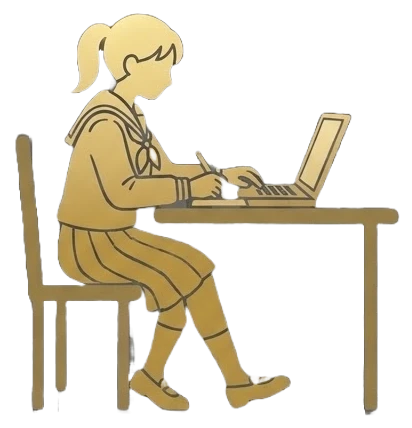
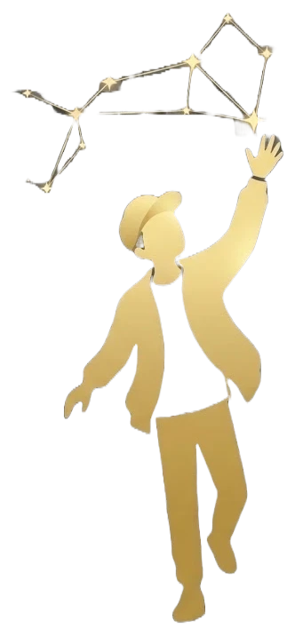
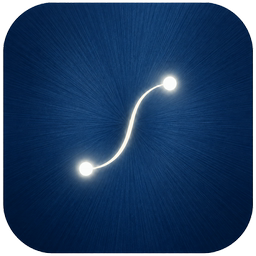

その思いつきが、無限の宇宙を創る
このアプリを起動した瞬間に、無限の宇宙が広がります。
思いつきを星に、つないで星座に。触れるたび心地いい、新しいアイデア整理アプリ
SOPHIA は、直感的に誰にでも分かりやすく、その操作性の気持ちよさが創造力を高めてくれます。
それは、あなただけの宇宙―
スマホでも、PCでも。
モバイル版SOPHIA
PC版SOPHIA
スマホで製品版を買えば、PC版も製品版に（購入画面に出るコード、または製品版のスマホから書き出した作品ファイルで）。
作品は、作品ファイルを書き出して読み込めば、スマホとPCのあいだで移せます。自動で同期はしません。ブラウザ版は、インストールなしで試せる体験版です。
こんな方におすすめ！

受験やテスト勉強をしている学生覚えることを星にして、つながりで整理。
打ち合わせ中に、すばやく整理してメモを取りたい社会人話の流れを、その場で星に。

頭の中のアイデアを、星をつないで形にするクリエイター物語や企画の種を、星座に。
外食ランチ一回分で、自分だけの宇宙が一生手に入る。
星10個・プロジェクト1つまで。ログイン不要で、すぐに試せます。
月額なし。一度の購入で、ずっとあなたのもの。星はいくつでも、プロジェクトは5つまで。スマホで買えば、PC版も製品版に。

SOPHIA
iPhone と PC は、いますぐ。
Android 版は近日公開。iPhone・Android・PC で、いますぐ。
PC版（Windows）は、無料の体験版から。スマホで製品版を購入すると、PC版も製品版になります。PC版について ›
よくある質問
無料で使えますか？
体験版は無料です。星10個・プロジェクト1つまで、ログイン不要ですぐに試せます。気に入ったら、製品版（1,200円の買い切り）で星はいくつでも、プロジェクトは5つまで使えます。月額のサブスクリプションではありません。
スマホとPCは同期しますか？
自動では同期しません。作品は「書き出す」で作品ファイル（.json）にして、もう一方の「読み込む」で開くと移せます。スマホとPCで同じ作品ファイルが使えます。
PC版を製品版にするには？
スマホ（iPhone / Android）で製品版を購入すると、購入画面に「PC版のコード」が出ます。PC版でそのコードを入れると製品版になります。製品版のスマホから書き出した作品ファイルをPC版で開いても、製品版になります。
ブラウザ版とPC版の違いは？
ブラウザ版は、インストールなしで試せる体験版です（星10個まで）。ブラウザ版は製品版にはできません。ずっと使うなら、スマホのアプリか Windows のPC版をどうぞ。ブラウザ版で書き出した作品は、アプリで読み込めます。
作ったデータはどこに保存されますか？
あなたの端末の中だけです。アカウント登録もログインもなく、星やメモがサーバーに送られることはありません（PC版の「全体要約」を自分で使ったときだけ、要約のために星の名前と中身が送られます）。テキストや作品ファイルとして書き出して、保存や共有もできます。
マインドマップとは何が違いますか？
枠を並べて埋めていくのではなく、思いつきを「星」にして、指でなぞって星と星をつなぎます。つないだ順に「要約」すると、企画書や構成案の下書きになる文章ができます。
Android版はありますか？
Android版は近日、Google Play で公開します。Android版は Google Play からダウンロードできます。
機種変更したら、作品や購入はどうなりますか？
作品は「書き出す」で作品ファイルにして、新しい端末で「読み込む」と引き継げます。製品版は、購入画面の「購入を復元」で、同じアカウントの新しい端末でも使えます。
どの言語に対応していますか？
日本語・英語・スペイン語・フランス語・ドイツ語です。端末の言語設定に合わせて切り替わります。